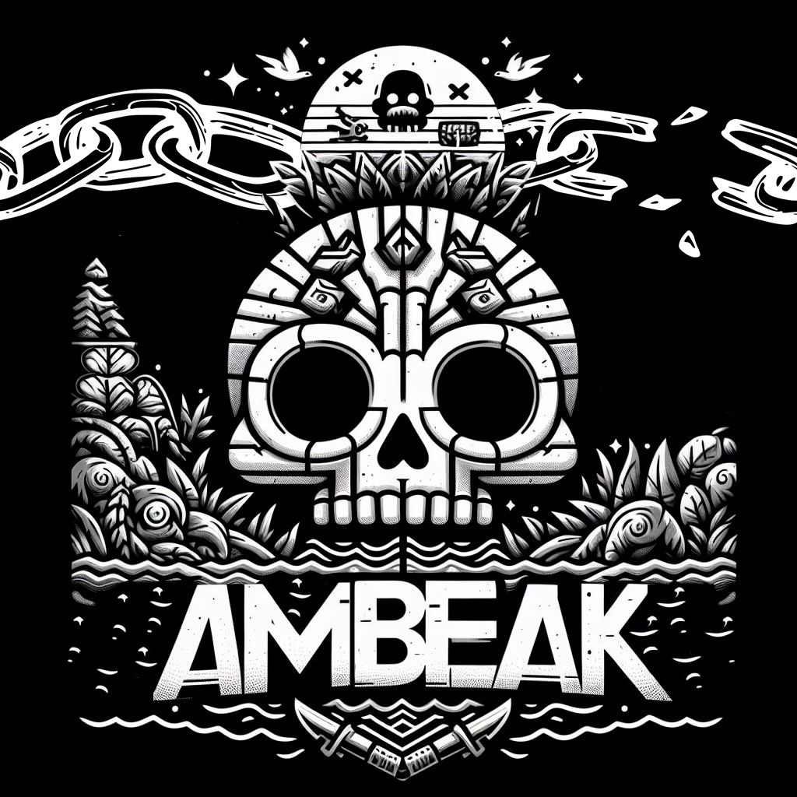

Aficiones
Deporte
Durante toda mi vida, he hecho muchos tipos diferentes de deportes. Desde trial en bicicleta, hasta teakwondo. Pero mi "pasión" siempre ha sido por el Tennis
- Tennis
He jugado a Tennis toda mi vida y me encanta
- Esquí
A parte del Tennis, el esquí alpino es otro de mis deportes favoritos
Juegos
Desde pequño he jugado a juegos, tanto para consola como pc. Pero algunos de los que actualmente más juego son:
CounterStrike2
League of Legends
Valorant
Elden Ring
Desarrollo de Videojuegos
Actualmente estoy trabajando con un equipo para desarrolar un Juego. El juego es Ambeak, un juego 2D todos contra todos en el que gana el ultimo que quede en pie.
